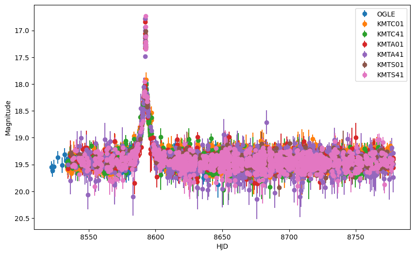
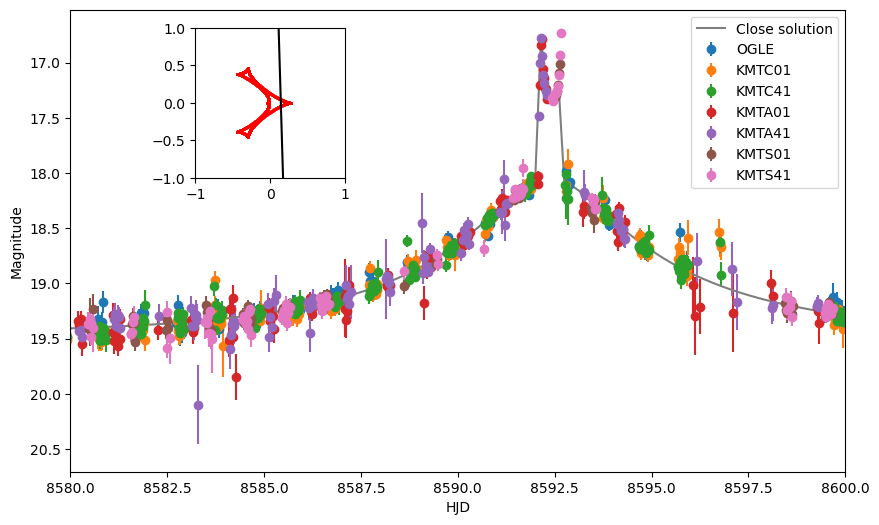
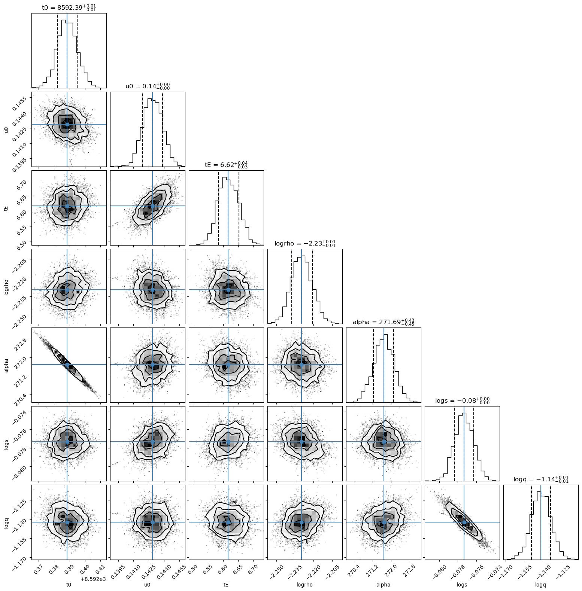
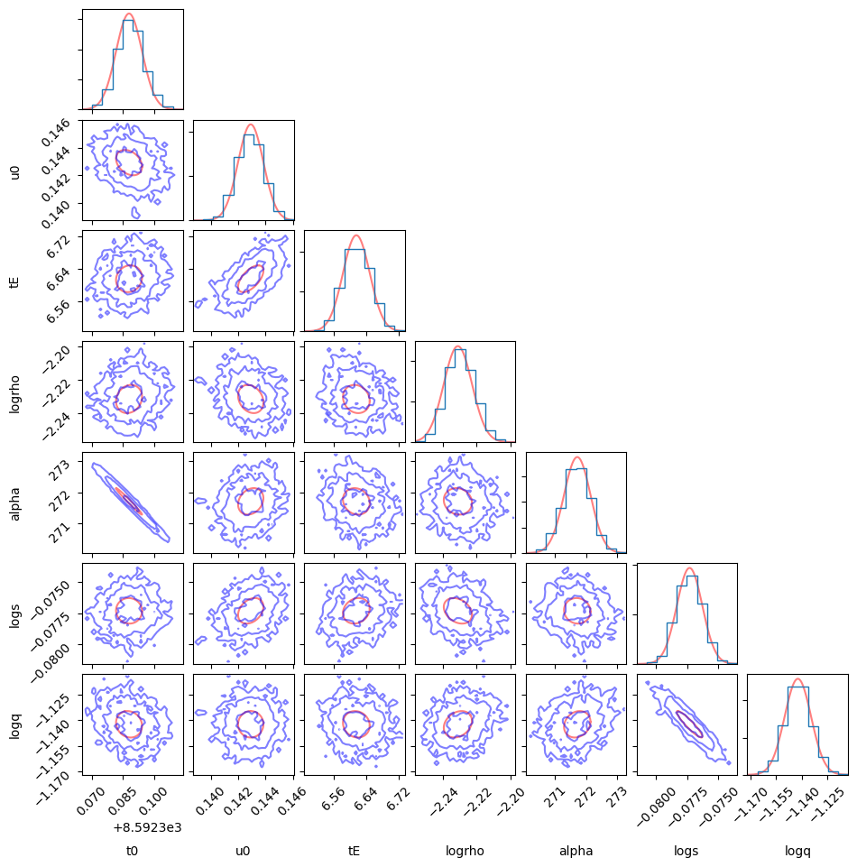
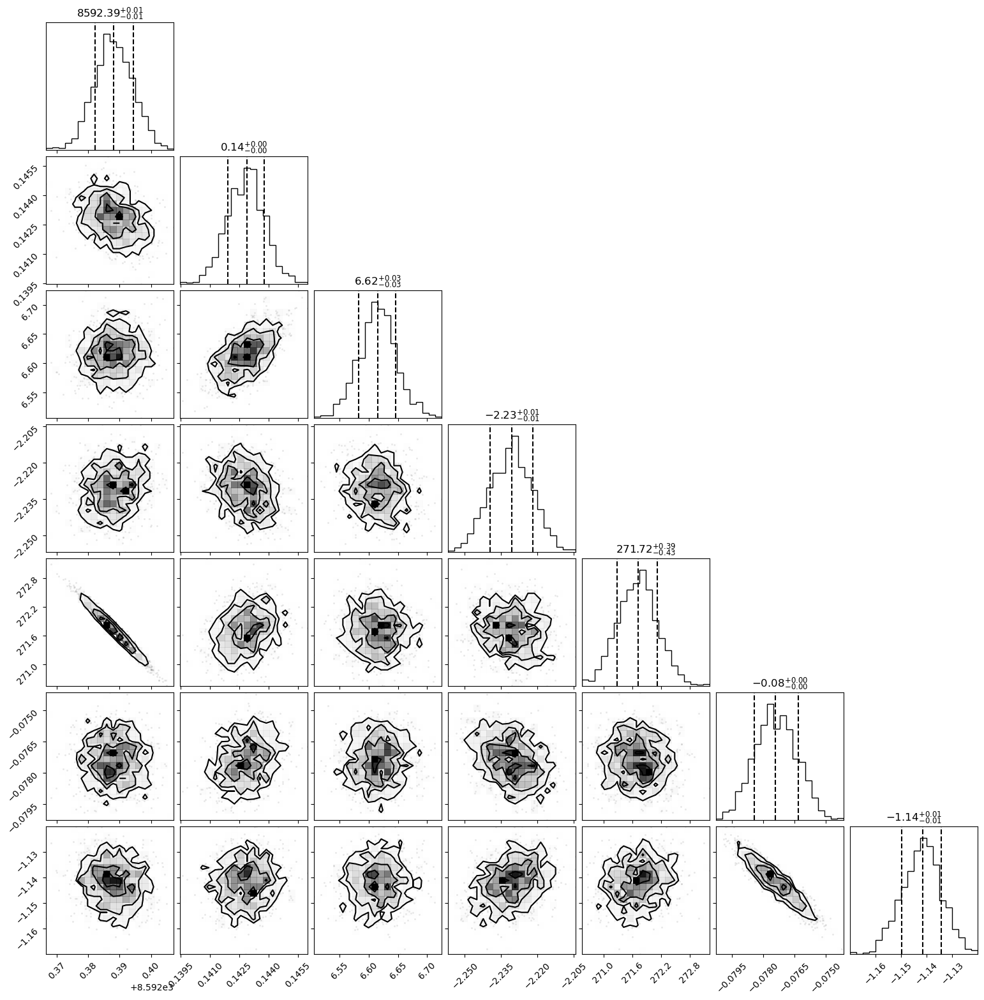

KB-19-0371
This notebook shows the application of our code to the real event analysis including NUTS, Fisher matrix and Basin-hopping optimization.
import numpy as np
# %matplotlib ipympl
import matplotlib.pyplot as plt
import pandas as pd
import os
global numofchains
global N_pmap
N_pmap = 10
numofchains = 1
os.environ["XLA_FLAGS"] = f'--xla_force_host_platform_device_count={N_pmap*numofchains}'
import jax
import jax.numpy as jnp
import jax
import jax.numpy as jnp
import numpyro
import numpyro.distributions as dist
from numpyro.infer import MCMC, NUTS
from numpyro.diagnostics import print_summary
from microlux import binary_mag
import VBBinaryLensing
from MulensModel import caustics
from IPython.display import display, clear_output
import emcee
import corner
from multiprocessing import Pool
print(os.getcwd())
data = pd.read_csv('microlensing/example/data/KB_19_0371.csv') ## remind to change the path to the data file
cond = (data['e_mag'] < 0.4) & (data['HJD'] > 8500)
data = data[cond]
error_frac = {'OGLE':1.59, 'KMTC01':1.41, 'KMTC41':1.38, 'KMTA01':1.35, 'KMTA41':1.57, 'KMTS01':1.19, 'KMTS41':1.41}
data['e_mag'] = data.apply(lambda x: np.sqrt(0.003**2+x['e_mag']**2*error_frac[x['Tel']]**2), axis=1)
fs_dict = {'OGLE':0.1865329, 'KMTC01':0.15551681, 'KMTC41':0.16063666, 'KMTA01':0.1964294, 'KMTA41':0.12068191, 'KMTS01':0.22724801, 'KMTS41':0.16661919}
fb_dict = {'OGLE':0.07354933, 'KMTC01':0.10144077, 'KMTC41':0.10602545, 'KMTA01':0.04612094, 'KMTA41':0.144712, 'KMTS01':0.00623068, 'KMTS41':0.09311172}
def align_function(mag, mag_err, fs, fb, fs_ogle, fb_ogle):
flux = 10.**(0.4*(18.-mag))
ferr = mag_err*flux*np.log(10.)/2.5
flux_ogle = (flux-fb)/fs*fs_ogle+fb_ogle
ferr_ogle = ferr/fs*fs_ogle
mag_ogle = 18.-2.5*np.log10(flux_ogle)
mag_err_ogle = ferr_ogle/flux_ogle*2.5/np.log(10.)
return mag_ogle, mag_err_ogle
data['mag_aligned'], data['e_mag_aligned'] = zip(*data.apply(lambda x: align_function(x['mag'], x['e_mag'], fs_dict[x['Tel']], fb_dict[x['Tel']], fs_dict['OGLE'], fb_dict['OGLE']), axis=1))
data
/home/coast/Documents/astronomy/microlensing
Tel Filter HJD mag e_mag mag_aligned e_mag_aligned
1894 OGLE I 8521.87056 19.553 0.114519 19.553000 0.114519
1895 OGLE I 8522.86293 19.610 0.120877 19.610000 0.120877
1896 OGLE I 8523.86950 19.536 0.120877 19.536000 0.120877
1897 OGLE I 8526.85876 19.367 0.119288 19.367000 0.119288
1898 OGLE I 8529.86680 19.515 0.143131 19.515000 0.143131
... ... ... ... ... ... ... ...
12227 KMTS41 I 8776.25067 19.543 0.080426 19.551285 0.090728
12228 KMTS41 I 8776.27388 19.594 0.094518 19.608994 0.107285
12229 KMTS41 I 8776.28745 19.412 0.100155 19.404592 0.111363
12230 KMTS41 I 8777.24100 19.487 0.114249 19.488316 0.128059
12231 KMTS41 I 8777.28137 19.415 0.102974 19.407928 0.114532
[10287 rows x 7 columns]
cond = (data['e_mag_aligned'] < 0.4) & (data['HJD'] > 8500)
data = data[cond]
# error_frac = {'OGLE':1.59, 'KMTC01':1.41, 'KMTC41':1.38, 'KMTA01':1.35, 'KMTA41':1.57, 'KMTS01':1.19, 'KMTS41':1.41}
# data['e_mag_aligned'] = data.apply(lambda x: np.sqrt(0.003**2+x['e_mag_aligned']**2*error_frac[x['Tel']]**2), axis=1)
fig, ax = plt.subplots(figsize=(10, 6))
all_tel = data['Tel'].unique()
for i in all_tel:
tel_data = data[data['Tel'] == i]
ax.errorbar(tel_data['HJD'], tel_data['mag_aligned'], yerr=tel_data['e_mag_aligned'], fmt='o', label=i)
ax.set_xlabel('HJD')
ax.set_ylabel('Magnitude')
ax.legend()
fig.gca().invert_yaxis()
plt.show()

There are two degenrate solutions for this event. The wide/close degeneracy light curve is plotted in below. We use the close solution as the example.
def mag_to_flux(mag, e_mag):
flux = 10.**(0.4*(18.-mag))
ferr = e_mag*flux*np.log(10.)/2.5
return flux, ferr
def flux_to_mag(flux):
mag = 18.-2.5*np.log10(flux)
return mag
def light_curve_VBBL(times,parms):
t0 = parms['t0']
u0 = parms['u0']
tE = parms['tE']
rho = 10.**parms['logrho']
alpha_deg = parms['alpha']
s = 10.**parms['logs']
q = 10.**parms['logq']
tau = (times-t0)/tE
VBBL = VBBinaryLensing.VBBinaryLensing()
alpha_VBBL=alpha_deg/180*np.pi+np.pi
VBBL.Tol=1e-2
VBBL.RelTol=1e-3
VBBL.BinaryLightCurve
y1 = -u0*np.sin(alpha_VBBL) + tau*np.cos(alpha_VBBL)
y2 = u0*np.cos(alpha_VBBL) + tau*np.sin(alpha_VBBL)
params = [np.log(s), np.log(q), u0, alpha_VBBL, np.log(rho), np.log(tE), t0]
VBBL_mag = VBBL.BinaryLightCurve(params, times, y1, y2)
return np.array(VBBL_mag)
parms_close = {'t0': 8592.388619, 'u0': 0.140631, 'tE': 6.655161, 'logrho': -2.231148, 'alpha': 271.695690, 'logs': -0.079158, 'logq': -1.141006}
# parms_wide = {'t0': 8592.391925, 'u0': 0.144696, 'tE': 6.640740, 'logrho': -2.187052, 'alpha': 271.325666, 'logs': 0.188680, 'logq': -0.957499}
flux,ferr = mag_to_flux(data['mag_aligned'].values, data['e_mag_aligned'].values)
HJD = data['HJD'].values
fs,fb = 0.18893952,0.07114746
times = np.linspace(8500, 8800, 2000)
mag_close = light_curve_VBBL(times, parms_close)
flux_close = mag_close*fs + fb
mag_close = flux_to_mag(flux_close)
ax.plot(times, mag_close,label='Close solution')
ax.legend()
ax.set_xlim(8580, 8600)
ax_traj = fig.add_axes([0.2, 0.6, 0.25, 0.25])
tau = (times-parms_close['t0'])/parms_close['tE']
alpha = parms_close['alpha']/180*np.pi
y1 = -parms_close['u0']*np.sin(alpha) + tau*np.cos(alpha)
y2 = parms_close['u0']*np.cos(alpha) + tau*np.sin(alpha)
ax_traj.plot(y1, y2,c='black')
ax_traj.set_aspect('equal')
ax_traj.set_xlim(-1., 1.)
ax_traj.set_ylim(-1., 1.)
caustics_instance = caustics.Caustics(s=10**parms_close['logs'], q=10**parms_close['logq'])
caustics_x, caustics_y = caustics_instance.get_caustics()
ax_traj.scatter(caustics_x, caustics_y, c='r', s=1)
display(fig)

def objective_func(parms, data, fs, fb, return_chi2=True):
parm_name = ['t0', 'u0', 'tE', 'logrho', 'alpha', 'logs', 'logq']
parm_dict = dict(zip(parm_name, parms))
times,flux,ferr = data
model_flux = light_curve_VBBL(times, parm_dict)*fs + fb
chi2 = np.sum(((model_flux-flux)/ferr)**2)
if return_chi2:
return chi2
else:
return -0.5*chi2
initial_guess = [8.59238794e+03, 1.42915228e-01, 6.61567944e+00, -2.23131913e+00, 2.71714918e+02, -7.73128397e-02, -1.14229367e+00]
print(objective_func(initial_guess, [HJD,flux,ferr], fs, fb))
print('tot dof = ', len(HJD)-len(parms_close))
10225.764464996253
tot dof = 10161
# import scipy.optimize as op
# res = op.minimize(objective_func, x0=initial_guess, args=([HJD,flux,ferr], fs, fb), method='Nelder-Mead')
# print(res.x)
# print(res.fun)
if __name__ == '__main__':
n_dim = len(initial_guess)
nwalkers = 20
step_size = 0.001*np.ones_like(initial_guess)
pos = [initial_guess+step_size*np.random.randn(n_dim) for i in range(nwalkers)]
with Pool(nwalkers) as pool:
sampler = emcee.EnsembleSampler(nwalkers, n_dim, objective_func, args=([HJD,flux,ferr], fs, fb, False), pool=pool)
pos, prob, state = sampler.run_mcmc(pos, 500, progress=True)
sampler.reset()
sampler.run_mcmc(pos, 1000, progress=True)
/home/coast/miniconda3/envs/autodiff/lib/python3.12/multiprocessing/popen_fork.py:66: RuntimeWarning: os.fork() was called. os.fork() is incompatible with multithreaded code, and JAX is multithreaded, so this will likely lead to a deadlock.
self.pid = os.fork()
100%|██████████| 500/500 [00:43<00:00, 11.53it/s]
100%|██████████| 1000/1000 [01:30<00:00, 11.02it/s]
sample_chain = sampler.get_chain()
print(sample_chain.shape)
sample_chain_reshape = jnp.transpose(sample_chain, (1, 0, 2))
print(sample_chain_reshape.shape)
print_summary(sample_chain_reshape)
(1000, 20, 7)
(20, 1000, 7)
mean std median 5.0% 95.0% n_eff r_hat
Param:0[0] 8592.39 0.01 8592.39 8592.38 8592.40 192.50 1.10
Param:0[1] 0.14 0.00 0.14 0.14 0.14 208.35 1.11
Param:0[2] 6.62 0.03 6.62 6.56 6.67 239.32 1.09
Param:0[3] -2.23 0.01 -2.23 -2.24 -2.22 251.92 1.08
Param:0[4] 271.67 0.41 271.67 271.01 272.33 181.92 1.11
Param:0[5] -0.08 0.00 -0.08 -0.08 -0.08 215.96 1.09
Param:0[6] -1.14 0.01 -1.14 -1.16 -1.13 210.24 1.09
parm_name = ['t0', 'u0', 'tE', 'logrho', 'alpha', 'logs', 'logq']
chain = sampler.get_chain(flat=True)
fig = corner.corner(chain,labels=parm_name,quantiles=[0.16, 0.5, 0.84],show_titles=True,truths=np.median(chain,axis=0))
plt.show()
for i in range(len(parm_name)):
print(parm_name[i], np.median(chain[:,i]), np.std(chain[:,i]))

t0 8592.388418845861 0.0064818587784778794
u0 0.14286323570770812 0.0009629699096971133
tE 6.616800447339974 0.033837046463837665
logrho -2.2296836689929522 0.008402443064801798
alpha 271.6881009657352 0.4458504726993328
logs -0.07733778479058154 0.001033052615132573
logq -1.1422378219044174 0.007720610229842566
from matplotlib.ticker import MaxNLocator
from matplotlib.colors import LinearSegmentedColormap
from matplotlib.patches import Ellipse
import matplotlib.cm as cm
def hist2d(x, y, *args, **kwargs):
"""
Plot a 2-D histogram of samples.
"""
ax = kwargs.pop("ax", plt.gca())
extent = kwargs.pop("extent", [[x.min(), x.max()], [y.min(), y.max()]])
bins = kwargs.pop("bins", 30)
color = kwargs.pop("color", "b")
linewidths = kwargs.pop("linewidths", None)
plot_datapoints = kwargs.get("plot_datapoints", True)
plot_contours = kwargs.get("plot_contours", True)
cmap=plt.get_cmap("gray")
cmap._init()
cmap._lut[:-3, :-1] = 0.
cmap._lut[:-3, -1] = np.linspace(1, 0, cmap.N)
X = np.linspace(extent[0][0], extent[0][1], bins + 1)
Y = np.linspace(extent[1][0], extent[1][1], bins + 1)
try:
H, X, Y = np.histogram2d(x.flatten(), y.flatten(), bins=(X, Y),
weights=kwargs.get('weights', None))
except ValueError:
raise ValueError("It looks like at least one of your sample columns "
"have no dynamic range. You could try using the "
"`extent` argument.")
V = 1.0 - np.exp(-0.5 * np.arange(1, 3.1, 1) ** 2)
Hflat = H.flatten()
inds = np.argsort(Hflat)[::-1]
Hflat = Hflat[inds]
sm = np.cumsum(Hflat)
sm /= sm[-1]
for i, v0 in enumerate(V):
try:
V[i] = Hflat[sm <= v0][-1]
except:
V[i] = Hflat[0]
X1, Y1 = 0.5 * (X[1:] + X[:-1]), 0.5 * (Y[1:] + Y[:-1])
X, Y = X[:-1], Y[:-1]
if plot_datapoints:
ax.plot(x, y, "o", color=color, ms=1.5, zorder=-1, alpha=0.1,
rasterized=True)
if plot_contours:
ax.contourf(X1, Y1, H.T, [V[-1], H.max()],
cmap=LinearSegmentedColormap.from_list("cmap",
([1] * 3,
[1] * 3),
N=2),antialiased=False)
if plot_contours:
# ax.pcolor(X, Y, H.max() - H.T, cmap=cmap)
V = [V[-1],V[-2],V[-3]]
ax.contour(X1, Y1, H.T, V, colors=color, alpha=0.5,linewidths=linewidths)
# ax.contourf(X1, Y1, H.T, [V[-1], H.max()], cmap=LinearSegmentedColormap.from_list("cmap",([1] * 3,[1] * 3),N=2), antialiased=False)
data = np.vstack([x, y])
mu = np.mean(data, axis=1)
cov = np.cov(data)
if kwargs.pop("plot_ellipse", False):
error_ellipse(mu, cov, ax=ax, edgecolor="r", ls="dashed")
ax.set_xlim(extent[0])
ax.set_ylim(extent[1])
#ax.set_xticklabels([])
#ax.set_yticklabels([])
return
def plot_covariance(params,labels,cov_mat,chain):
''' plot covariance matrix: both theoretical & mcmc chain. '''
## set up axes ##
K = len(params)
factor = 2.0 # size of one side of one panel
lbdim = 1.2 * factor # size of left/bottom margin
trdim = 0.15 * factor # size of top/right margin
whspace = 0.1 # w/hspace size
plotdim = factor * K + factor * (K - 1.) * whspace
dim = lbdim + plotdim + trdim
fig,axes = plt.subplots(K,K,figsize=(10,10))
lb = lbdim / dim
tr = (lbdim + plotdim) / dim
fig.subplots_adjust(left=lb, bottom=lb, right=tr, top=tr, wspace=whspace, hspace=whspace)
## set up axex extent ##
extents = [[x.min(), x.max()] for x in chain.T]
##
for i in range(K):
ax = axes[i,i]
mu_x,sigma_x = params[i],np.sqrt(cov_mat[i,i])
x = np.linspace(extents[i][0],extents[i][1],100)
p = 1/np.sqrt(2*np.pi)/sigma_x * np.exp(-(x-mu_x)**2/2./sigma_x**2)
ax.plot(x,p,'r',alpha=0.5)
ax.hist(chain[:,i],histtype='step',density=1)
ax.set_xlim(extents[i])
ax.set_yticklabels([])
ax.xaxis.set_major_locator(MaxNLocator(4))
if i < K-1:
ax.set_xticklabels([])
else:
[l.set_rotation(45) for l in ax.get_xticklabels()]
if labels is not None:
ax.set_xlabel(labels[i])
ax.xaxis.set_label_coords(0.5, -0.7)
for j in range(K):
ax = axes[i,j]
if j > i:
ax.set_visible(False)
ax.set_frame_on(False)
continue
elif j == i:
continue
## plot error ellipse from given covariance matrix ##
mu_y,sigma_y = params[j],np.sqrt(cov_mat[j,j])
sigx2,sigy2,sigxy = cov_mat[i,i],cov_mat[j,j],cov_mat[i,j]
## find principle axes ##
sig12 = 0.5*(sigx2+sigy2) + np.sqrt((sigx2-sigy2)**2*0.25+sigxy**2)
sig22 = 0.5*(sigx2+sigy2) - np.sqrt((sigx2-sigy2)**2*0.25+sigxy**2)
sig1 = np.sqrt(sig12)
sig2 = np.sqrt(sig22)
alpha = 0.5*np.arctan(2*sigxy/(sigx2-sigy2))
if sigy2 > sigx2:
alpha += np.pi/2.
## plot ellipse ##
t = np.linspace(0,2*np.pi,300)
x = mu_x + sig1*np.cos(t)*np.cos(alpha) - sig2*np.sin(t)*np.sin(alpha)
y = mu_y + sig1*np.cos(t)*np.sin(alpha) + sig2*np.sin(t)*np.cos(alpha)
ax.plot(y,x,'r',alpha=0.5)
## plot error ellipse from mcmc chain ##
hist2d(chain[:,j],chain[:,i],ax=ax,extent=[extents[j],extents[i]],plot_contours=True,plot_datapoints=False)
ax.xaxis.set_major_locator(MaxNLocator(4))
ax.yaxis.set_major_locator(MaxNLocator(4))
if i < K-1:
ax.set_xticklabels([])
else:
[l.set_rotation(45) for l in ax.get_xticklabels()]
if labels is not None:
ax.set_xlabel(labels[j])
ax.xaxis.set_label_coords(0.5,-0.7)
if j > 0:
ax.set_yticklabels([])
else:
[l.set_rotation(45) for l in ax.get_yticklabels()]
if labels is not None:
ax.set_ylabel(labels[i])
ax.yaxis.set_label_coords(-0.6,0.5)
return fig,axes
## fisher information matrix
def light_curve_Jax(parms,times):
t0 = parms[0]
u0 = parms[1]
tE = parms[2]
rho = 10.**parms[3]
alpha_deg = parms[4]
s = 10.**parms[5]
q = 10.**parms[6]
mag_Jax = binary_mag(t0, u0, tE, rho, q, s, alpha_deg, times)
return mag_Jax
initial_guess = [8.59238794e+03, 1.42915228e-01, 6.61567944e+00, -2.23131913e+00, 2.71714918e+02, -7.73128397e-02, -1.14229367e+00]
times,flux,ferr = HJD,flux,ferr
weight_light_curve = lambda x: (light_curve_Jax(x, times)*fs+fb)/ferr
jacobian_fun = jax.jacfwd(weight_light_curve)
jacobian = jacobian_fun(jnp.array(initial_guess))
fisher_matrix = jnp.dot(jacobian.T, jacobian)
fisher_cov = jnp.linalg.inv(fisher_matrix)
fig,axes= plot_covariance(initial_guess,parm_name,fisher_cov,chain)
plt.show()

print(HJD.shape)
HJD_pad = jnp.pad(HJD, (0, 10170-HJD.shape[0]), 'constant', constant_values=HJD[-1])
print(HJD_pad.shape)
flux_pad = jnp.pad(flux, (0, 10170-flux.shape[0]), 'constant', constant_values=flux[-1])
ferr_pad = jnp.pad(ferr, (0, 10170-ferr.shape[0]), 'constant', constant_values=ferr[-1])
(10168,)
(10170,)
def light_curve_Jax(times,parms):
t0 = parms[0]
u0 = parms[1]
tE = parms[2]
rho = 10.**parms[3]
alpha_deg = parms[4]
s = 10.**parms[5]
q = 10.**parms[6]
mag_Jax = binary_mag(t0, u0, tE, rho, q, s, alpha_deg, times)
return mag_Jax
def light_curve_Jax_pmap(times,parms,i):
times = jnp.reshape(times,(-1,N_pmap),order='C')
times_i = times[:,i]
return light_curve_Jax(times_i,parms)
# def objective_func(parms, data, fs, fb, return_chi2=True):
# times,flux,ferr = data
# model_flux = light_curve_Jax(times, parms)*fs + fb
# chi2 = np.sum(((model_flux-flux)/ferr)**2)
# if return_chi2:
# return chi2
# else:
# return -0.5*chi2
# print(objective_func(initial_guess, [HJD,flux,ferr], fs, fb))
# print('tot dof = ', len(HJD)-len(parms_close))
def model_HMC(data, fs, fb, init_val, L):
times,flux,ferr = data
parmsample=numpyro.sample('param_base',dist.Uniform(-1*jnp.ones(len(init_val)),1*jnp.ones(len(init_val))))
parmsample=jnp.dot(L*10,parmsample)+jnp.array(init_val)
numpyro.deterministic('param',parmsample)
mag_mod = jax.pmap(light_curve_Jax_pmap,in_axes=(None,None,0))(times,parmsample,jnp.arange(10))
mag_mod = jnp.reshape(mag_mod,(flux.shape[0],),order='F')
flux_mod = mag_mod*fs + fb
# flux_mod = light_curve_Jax(times, parmsample)*fs + fb
numpyro.sample('obs', dist.Normal(flux_mod, ferr), obs=flux)
chi2 = jnp.sum(((flux_mod-flux)/ferr)**2)
numpyro.deterministic('chi2',chi2)
L = jnp.linalg.cholesky(fisher_cov)
init_strategy=numpyro.infer.init_to_value(values={'param_base':jnp.zeros(len(initial_guess))})
nuts_kernel = NUTS(model_HMC,step_size=1e-2,target_accept_prob=0.8,init_strategy=init_strategy,forward_mode_differentiation=True)
mcmc = MCMC(nuts_kernel,num_warmup=500,num_samples=1000,num_chains=1,progress_bar=True)
mcmc.run(jax.random.PRNGKey(0),data=[HJD_pad,flux_pad,ferr_pad],fs=fs,fb=fb,init_val=initial_guess,L=L)
mcmc.print_summary(exclude_deterministic=False)
0%| | 0/1500 [00:00<?, ?it/s]/home/coast/miniconda3/envs/autodiff/lib/python3.12/site-packages/jax/_src/interpreters/pxla.py:1829: UserWarning: The jitted function _body_fn includes a pmap. Using jit-of-pmap can lead to inefficient data movement, as the outer jit does not preserve sharded data representations and instead collects input and output arrays onto a single device. Consider removing the outer jit unless you know what you're doing. See https://github.com/google/jax/issues/2926.
warnings.warn(
warmup: 0%| | 1/1500 [00:43<18:02:38, 43.33s/it, 63 steps of size 1.43e-01. acc. prob=1.00]/home/coast/miniconda3/envs/autodiff/lib/python3.12/site-packages/jax/_src/interpreters/pxla.py:1829: UserWarning: The jitted function _body_fn includes a pmap. Using jit-of-pmap can lead to inefficient data movement, as the outer jit does not preserve sharded data representations and instead collects input and output arrays onto a single device. Consider removing the outer jit unless you know what you're doing. See https://github.com/google/jax/issues/2926.
warnings.warn(
sample: 100%|██████████| 1500/1500 [10:48<00:00, 2.31it/s, 3 steps of size 6.35e-01. acc. prob=0.92]
/home/coast/miniconda3/envs/autodiff/lib/python3.12/site-packages/jax/_src/interpreters/pxla.py:1829: UserWarning: The jitted function <unnamed wrapped function> includes a pmap. Using jit-of-pmap can lead to inefficient data movement, as the outer jit does not preserve sharded data representations and instead collects input and output arrays onto a single device. Consider removing the outer jit unless you know what you're doing. See https://github.com/google/jax/issues/2926.
warnings.warn(
mean std median 5.0% 95.0% n_eff r_hat
chi2 10233.04 3.65 10232.52 10227.54 10238.19 537.69 1.00
param[0] 8592.39 0.01 8592.39 8592.38 8592.40 1589.45 1.00
param[1] 0.14 0.00 0.14 0.14 0.14 1618.79 1.00
param[2] 6.62 0.03 6.62 6.56 6.67 1562.57 1.00
param[3] -2.23 0.01 -2.23 -2.25 -2.22 1450.13 1.00
param[4] 271.71 0.42 271.72 271.05 272.40 1533.68 1.00
param[5] -0.08 0.00 -0.08 -0.08 -0.08 1858.51 1.00
param[6] -1.14 0.01 -1.14 -1.16 -1.13 1910.64 1.00
param_base[0] 0.00 0.10 0.00 -0.16 0.16 1589.45 1.00
param_base[1] -0.01 0.10 -0.01 -0.19 0.14 1547.47 1.00
param_base[2] 0.00 0.10 0.01 -0.15 0.17 1867.11 1.00
param_base[3] 0.00 0.10 0.01 -0.17 0.16 1428.16 1.00
param_base[4] 0.02 0.10 0.01 -0.16 0.16 1348.62 1.00
param_base[5] 0.00 0.10 0.00 -0.15 0.16 2279.91 1.00
param_base[6] 0.00 0.09 -0.00 -0.15 0.15 1522.74 1.00
Number of divergences: 0
import corner
hmc_sample = mcmc.get_samples()['param']
print(hmc_sample.shape)
fig = corner.corner(np.array(hmc_sample),quantiles=[0.16, 0.5, 0.84],show_titles=True)
(1000, 7)
